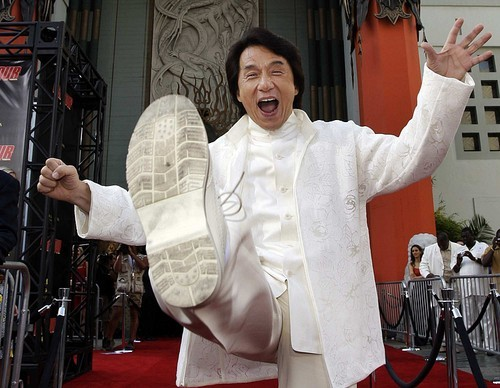
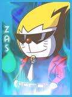
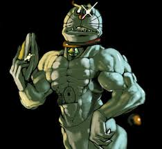

De: La Frikipedia, la enciclopedia extremadamente seria.
De: La Frikipedia, la enciclopedia extremadamente seria. De: La Frikipedia, la enciclopedia extremadamente seria.

|
ATENCIÓN El autor de este artículo no aprendió geometría en el colegio, ha leído muy pocos libros en su vida y/o no se ha leído las ayudas. Así que es incapaz de producir un texto medianamente maquetado. Por lo tanto es necesario remendar el artículo. |
!Al Turóóóóóóóóóóóóóóóóóóóóóóóóóóóóóóóón!
General Tani antes de lanzar las tropas al combate.
Me compraré un Lamborghini exclusivo con incrustaciones de diamantes después de la guerra
Mattias Nilsson en una entrevista.
¿Necesitas protegerte? Compra un arma termonuclear en Mafiarusa.org
Publicidad.
Lidl, la cantidad no es cara.
Publicidad.
Pokemon, hazte con todos
Lema de Pueblo Paleta, al que siempre se responde:
¿Cómo quieres que me haga con todos si al minuto salen 500 nuevos?
Respuesta del lema de Pueblo Paleta.
Jesús te ama, el resto pensamos que eres gilipollas.
Lema de la Alianza Despeñaperros.
La Primera Guerra Interplanetaria (IGI) se produjo en el año 9876 después de Risto. Es una guerra en la que se enfrentan la Alianza Despeñaperros, la Tropa Luni y los Pardillos del Norte. Se produce, como no , en la Tierra. Y, en la imagen, lo que fue de la religión:
A continuación repasaremos los principales países de los que consta la Alianza
En Aspaña casi somos capaces de resucitar a Franco para ayudarnos, pero con los siguientes luchadores y el ejército nacional nos fue (como el culo) de perlas:
-Marrano Rajoy "Manostijeras":tiene el poder de generar (el descontento y huelgas)apoyo entre las tropas, y puede recortar y decapitar a los enemigos.
-Manguiurdangarín : Experto en el robo sin armas.
-Bárcenas (y desayunos) : Experto en el blanqueo de (capitales) datos.
- Sapatero: El que crea los zapatos para los uniformes.
Capital: Mandril
En la Nazion se generó el descontento general con la guerra, pues ya están hasta los huevos de perderlas, pero apoyaron a la Alianza con el kaiser, Maiquel Sumacher.
Capital: Nazity
-Al Capone: Experto en comercio en el mercado negro.
-Mario: Experto en saltos.
-WEEGEE: El que da más miedo de los italianomafiosos.
-Warrio: Experto en (tirar pedos) gasear al enemigo.
-Waluigi: Experto en nada.
Capital: Casa de Mario
En el país del sol hiriente, los grandes luchadores, que salen a patadas de tos sitios, tampoco estaban muy contentos:
-Son Gocu y Bejeta: Dos enemigos que se uniran ( si Dió quier) para la guerra.
-Ryu Hayabusa: Experto en repartir estopa.
-Gendo Ikari: En realidad es un mono disecado con una máscara, ya que está siempre en la misma pose y no se sabe si vivo o muerto. Campo AT es su poder.
- Dió (Jackie Chan): El comandante supremo de la Alianza no podía ser otro, aunque esté loco de tanto dar patadas y golpes y le chirríe el cuerpo, Jackie es nuestro líder. 
-Seto (Chulopollas) Kaiba: No sé que coño hace aquí ya que lo único que hace es jugar a las cartitas.
-Nobita Nobi: Enemigo directo del Comandante Doraimon. Conoce todos sus secretos y planes de destrucción.
-General Tani: Este carismático (vamos a decir tonto) tio solo da las ordenes de salida con su famoso grito ¡AL TURRÓÓÓÓÓÓÓÓÓÓÓN!
-General Takeshi y Junior: Otros patanes que no sé que hacen aquí.
-Pinki Winki y el dúo (gay) pirata: Si hablábamos de patanes, estos se llevan la palma y la ostia.
-Oliver Aton y Benji Frais: Oliver tiene el poder de detener el tiempo para hacer sus famosos saltos dimensionales y Benji puede parar las balas con sus guantes de titanio.
Capital: Torció
Los suecos se pusieron a beber cerveza como locos, y mandaron al pringao de Mattias Nilsson al combate. Mattias es experto en volarlo todo con sus explosivos C4.
Capital: Esto es el colmo
Vladimí Putí nos ayuda mucho con sus aportaciones de dinero negro.
Capital: Whisky
Otros que nos dan dinero negro.
Capital: ???
Aquí no quedaba ni dió después de la Primera Batalla, aunque si sobrevivieron unos "pocos":
-Comandante Shepard: El antialienigenas principal de nuestro planeta ataca de nuevo, y no está solo... sí, está solo.
Capital: Londres
Solo hay Kanguros.
Capital: Sincine
Los correanos nos dieron un proyecto fallido de Radiactivoman.
Capital: Saúl
Qué decir de los pobres chinos ¡Viva el Chino Cudeiro!
Capital: Cudeiro City
Los (imbéciles) catalanes tienen un arma secreta (además de explotar las centrales nucleares pa que to quede echo una mierda).
-Darth Veider: Sí, no es de Tatuin, no , nació en Cata la luña, y ahora regresa para vengarseeeeeeeee....
Capital: Viva España
-Ash Ketchup: El único paleto que tiene el poder de curar a los caídos en la tropa pokepokemon.
Himno Nacional
La cucaracha, la cucaracha
ya no puede caminar
porque no tiene, porque no queda
marihuana pa fumar.
Y ahora, y ahora
al super se va a comprar
pero no tiene, pero no queda
dinerillo pa pagar.
Asi que al banco, así que al banco
dinerillo va a robar.
Pero no tiene, pero no queda
pistolillas pa matar.
-Arnol Suaseneger: Un musculitos de mierda que hace de tonterminator
-El otro Dió (Chuck Norris): Sin comentarios
-O$ama (Bin Laden):Negro que no hace nada más que decir Yes we can, pero ellos no can.
-Homer Simpson: El presidente de la nación.
-Peter Griffing: Tiene el poder de aplastar a los enemigos
Capital: Wasingtonto DS
Los muy tontos del culo no duraron ni dos minutos en rendirse, pese a tener al Che Guevara en sus filas.
Capital: Malos Aires
- Ejército de los segadores: Liderados por lunis
-Ejército de los Lunis: Liderados por lunis
-Teletubbies: Liderados por teletabis
-Doratropas espaciales: Liderados por el Comandante General Doraimon
-Pokepokemon troops: Liderados por ellos mismos
-Doraimon
-Pikachu Original
-Keroro
-Piccolo
-El teletabi rojo
-El Luni amarillo
-El luni azul
-Buu, el chicle rosa
-Y el tío de la imagen
En Corea del Norte aprovecharon la coyuntura para sumarse a la guerra, encabezados por el General Supremo Shin Chan, el General Choi Song y el ex-General de la People's Liberation Army (PLA, pronunciación pela) , ShiSoy Penk-Oh.
Capital: Poyang
Si sois listos (ya se que no) os habréis percatado de que no es un país, pero da igual. La cosa es que el chiringuito que montaron Sergei Voronov y Josef Yurinov también está en esta guerra.
Capital: Que no es un país, joder.
Pingüinolandia, Jrecia, Infrancimundo,País Vaso, Fin de la Landia, Huele a Anda , Para al Guay y Chicle.
Durante la primera batalla, un escuadrón de segadores (de pollas) atacaron Londres. La (espantapájaros) reina de Terra de Ingla y (Dumbo) Carlos fueron asesinados ante la (incompetencia) desestabilidad de las tropas terrainglesas. Los Brutos de los segadores arrasaron con la población, hasta que el Comandante Shepard apareció no se pa qué porque no hizo ná. Fue entonces cuando llegó el apoyo de Sumacher que fue el más rápido en llegar. Los segadores se retiraban cuando llegó el general Luni amarillo y los mando de nuevo al combate, y llegaron los refuerzos pokepokemon, que son humanos a los que les lavan el cerebro viendo los episodios de pokemon (hay más de 7456885729248765926752986 epidodios), y solo saben decir hazte con tós (hay más de 85782758952657865782657283567657265925656575672965786278562578965782935690167867289567825 pokemon diferentes) y redujeron las fuerzas de la Alianza y mataron a varios ingleses en un segundo. Pero los ingleses pidieron el apoyo de los mercenarios de OpEj, (solo está Nilsson en el ejército) y les contestaron que estaban en la siesta.Finalmente, Shepard se tuvo que marchar y las tropas murieron casi todas.
Resumen: Los segadores atacan Terra de Ingla, con la destrucción de Londres. El ejército pokepokemon actuó de apoyo y la tropa Luni fue liderada por el luni amarillo. La Alianza obtuvo derrotas a patadas (literalmente) y era liderada por Shepard y por Sumacher, que huyeron cuando tuvieron oportunidad.
Bando Ganador: Evidentemente, la Tropa Luni...¡Espera! Han perdido tropas, bastantes, así que el que no ha perido ni ganado nada es el Pardillos del Norte. Mmmmmm..... Interesante.
Marrano Rajoy se enfadó mucho al conocer el resultado de la batalla en Londres, así que ordenó (si es que sabe) un ataque a una de las sedes de la Tropa Luni, Argentuza. La Tropa Luni, no obstante, tenía la base en EEHHSSSS( Estados Hundidos Socialistas Soviéticos). Así que la Alianza, esta vez comandada por Son Gocu llegó en la nube esa magica que tien Gocu a Argentuza, perop allí el Luni azul les invitó a uno de los muchos puticlubs que hay allí, y los de la Alianza fueron derrotados. Rajoy mandó a las únicas personas que no pueden caer en esta trampa: ¡LOS FRIKIS!
Tres días después de que los frikis encontrasen el camino hasta el culo del mundo, los lunis estaban convencidos de que con su maléfico plan los derrotarían, pero ¡NO! los frikis ganaron terreno, y a los Lunis no les quedó otra que huir a Malos Aires.
Resumen: Los frikis ganan tiempo antes del ataque de Malos Aires.
Bando Ganador: Alianza Despeñaperros.
Los Pardillos del Norte se ponen en marcha dirigiendo un ataque aéreo sobre NERD (Japo). La Alianza se da cuenta de sus intenciones rápidamente, aunque no consiguen llegar a tiempo porque había huelga de Iberia.
El Sargento Xi-Jimping de Corea del Norte dirigió un ataque aéreo y las tropas de NERD, los Nerdies, caían como nerdies. Legaron al Foglla Terminal, pero el Comandante Ikari salió por patas en cuanto vio la AK-47 del primer soldado que atravesó NERD. Cuando los Pardillos del Norte lo habían destrozado todo, como buenos norcoreanos, llegaron los Lunis, con tropas pokepokemon.
Los malditos pokepokemon acabaron con los norcoreanos porque los superaban en número y les hacían ver los episodios de la serie, y los norcoreanos quedaron drogados.
Resumen: Corea del Norte ataca NERD, con tal mala suerte (fue porque Dió quiso) que los pokepokemon se enteraron y trajeron su droga característica.
Bando Ganador: Tropa Luni
Muertes Importantes: Sargento Xi-Jimping.
Pocos días después de la tercera batalla (en concreto 765 días), Sapatero fue raptado cuando hacía la siesta ( es decir, de las 0 hasta las 23:59) por la Tropa Luni.
Pinki Winki, el Chulopollas Kaiba y algunos paletos más se dirigieron al lugar donde lo habían encerrado para (invitar a los lunis a beber) rescatarlo. Kaiba fue asesinado en cuanto los Lunis, comandados por el Luni azul ese que non se como se llama. pero pinki winki encontró a Sapatero, que le habían torturado y convertido en uno más de los pokepokemon. Vean:
Resumen: Sapatero es raptado y transformado en pokepokemon
Bando ganador: Tropas Lunis.
Las tropas Luni pillaron por sorpresa a la base rusa de Vodka en San Piedrasburguer, e intentaron destruirla, pero allí estaba haciendo la siesta el Comandante Bejeta. Pese a los esfuerzos de los soldados de la Alianza por rechazar al enemigo, el Comandante Lublú los arrinconó. Y le dio una oportunidad a Bejeta para rendirse, a lo que él respondió así.
Total, que Bejeta tuvo que huir, pero la base la conquistó la Tropa Luni.
Resumen: Tropa Luni conquista Base Vodka.
Bando Ganador: Tropa Luni.
o En Poyang, el ejército de Pardillos del Norte habían guardado varios cañones de flechipollas, para lanzarlos contra los Estados Hundidos , Correa del Sur y Japo.
El escuadrón de el Chino Cudeiro y el de Shepard se enfrentaron a los Pardillos para quitarles los cañones, pero los pardillos enviaron a la mafia a detenerles, aunque las tropas mafiosas lo hicieron (fatal) de puta madre.Veamos una instantánea de la batalla:
Los cañones fueron desactivados una vez Shepard se acordó de la contraseña, pero al poner una bomba para destruir el lugar, los pardillos les tendieron una emboscada, con las tropas de Chinchón. El general Shisoy Penk-Oh se suicidó cuando Shepard lo iba a matar, Song huyó en un 600 y ... ¡El Chino Cudeiro tiene a tiro a Shin Chan!¡Lo va a matar!... ¡NOOOOOOOOOOOOOOOOOOOOOOOOOOOOOOOOOOOOOOOOOOOOOOOOOOOOOOOOOOOOOOOOOOOOOOOOOOOOOOOOOOOOOOOOOOOO!¡Habeis matado al CHINO CUDEIRO! Pero su hermano va a vengarle...¡NOOOOOOOOOOOOOOOOOO!¡ASESINOS!¡Habeis matado al Hermano Cudeiro! A Shepard lo mató la marihuana (se puso a fumar en pleno combate) y Shin Chan murió por culpa de que Song lo atropelló con el 600.
Resumen: Ha muerto el Chino Cudeiro en una batalla para detener los cañones de flechipollas. Los Pardillos del Norte quedan disueltos.
Bando Ganador: Alianza Despeñaperros.
Por fin Rajoy había aprobado el ataque a Malos Aires, en el que iba a participar el Comandante General Jackie Chan.Pero cuando llegaron en avión de papel allí, se encontraron con que los sunormales de la Tropa Luni habían traído a todos los segadores, a algunos Pokepokemon, al Chuck Norris, el Suaseneger, Homer $impson y al tontolbote del luni amarillo. En cambio, cuando la alianza se percató de ello, el Comandante Ikari mandó traer a un WEEGEE salvaje que habían encontrado fumando marihuana.
Mientras, la Tropa Luni tenía un rayo o no se qué mierda para llevar a (¿personas?) la nave general. Bejeta fue a matarlos a todos, pero el WEEGEE le siguió. Vean lo que pasó:
Bejeta, después de derrotar a Manzana entabló un combate contra el invasor WEEGEE, pero le miró a los ojos y le transformó en otro WEEGEE:
En el combate de dioses, al no poder decidir entre uno u otro, pues mueren los dos(en realidad se fueron a tomar un pincho porque se aburrían).
Son Gocu (aún estaba vivo se enfrenta contra el WEEGEE de Bejeta, aunque también pierde:
El WEEGEE se retira con el otro WEEGEE al rayo y sube a la nave. Los comandantes y toda la chusma que estaba pol campo batalla quedan destruidos por la ira de WEEGEE.
Resumen: WEEGEE los mata a tós.
Bando Ganador: WEEGEE.
WEEGEE atacó la nave antes de que las tropas de la Alianza Despeñaperros se recompusiese y enviase a los refuerzos. La Tropa Luni de Doraimon, en la nave, intentaron destruirle, pero los mató a casi tós los mierdas que había. Pero un ninja salió de no se onde y:
Doraimon se reagrupó con toa su escoria pá defenderse del ataque de los de la Alianza.
Resumen: WEEGEE muere.
Bando Ganador: Tropa Luni
El General se abrió paso con una tuneladora por las paredes de la nave mientras las Doratropas de mierda combatían contra los soldados de la Alianza y llegó hasta onde estaba Doraimon. Doraimon era notablemente más débil que Tani, que le ayudaba el incompetente de Nobita, así que.
Doraimon digievoluciona en:  Chuliraimon.
Pero Chuliraimon era un cagao de los de manual, aunque con sus explosiones de no se qué mató al tonto Nobita, peo Tani huyó (como tós).
Resumen: No pasó ná.
Bando Ganador: Que no pasó ná, joder.
Chuliraimon intentó escapar en una de las naves, pero Tani volvió con Mario, que dando saltos mató a los Goombas... espera, no, a los pokemons esos que estaban intentando poner los capítulos de la serie.Pero:
Chuliraimon ultramegahipersuperdigievoluciona en:  Metaldoraimon
Pero como todos sabemos, ningún patético personaje de la tele puede con Mario, y lo mandaron a tomar pol culo.El tonto de Pinki Winki (si es que estaba vivo) hizo explotar la nave, con todos dentro, por ser unos payasos y celebrar la victoria.
Resumen: Doraimon la palma.
Bando Ganador de la guerra: Alianza Despeñaperros.
La Primera Guerra Interplanetaria está patrocinada por:
-Hacendado, tu marca de confianza.
-Segar, donde vive Sonic.
-Taringa!, sin comentarios porque no han pagado el anuncio.
-Mafia Rusa, el sitio favorito de Bárcenas.
THE END
Autor(es):